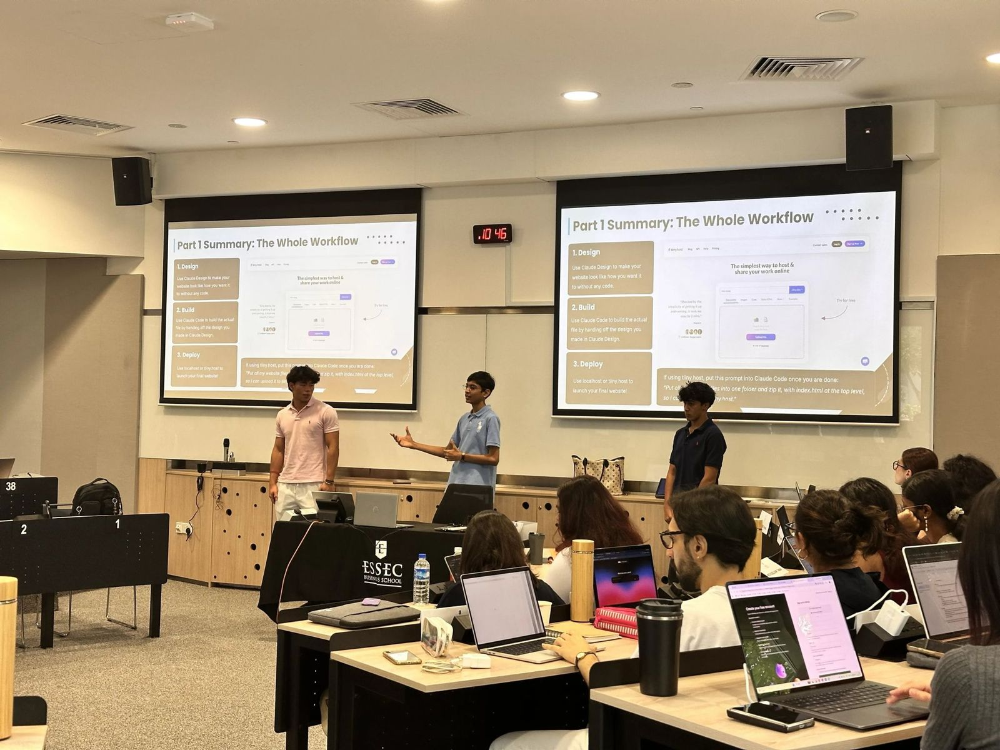
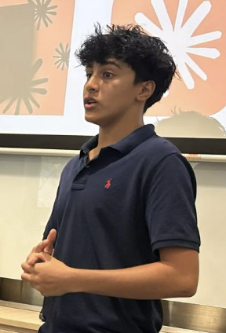

Rishabh Modi
Student at Singapore American School and part of the LaunchLab team. Co-led our session on Claude Design, Claude Code, GitHub and Vercel.
LinkedIn ↗“Episode one. Three guest stars walked in. Here is what happened next.”
Guest stars Rishabh Modi, Nirvan Anand & Yibo Yang, the LaunchLab team from Singapore American School

Student at Singapore American School and part of the LaunchLab team. Co-led our session on Claude Design, Claude Code, GitHub and Vercel.
LinkedIn ↗
Student at Singapore American School and part of the LaunchLab team. Co-led our session on building and launching websites with AI.
LinkedIn ↗Student at Singapore American School and part of the LaunchLab team. Co-led our session on vibe coding, from design to a live site.
LinkedIn ↗“I turned this session into a story. You make the choices.”
One night. Five tools. Build a café's website and put it live before the doors open.
My café opens at 8 am and I still have no website. Can you help?
It's perfect! Can it remember my regulars too?
Suditi · narratorNot yet. A basic site forgets everyone the moment they close the tab. That needs a backend, like Supabase. To be continued.
A vague prompt gives a vague website. A good one gives Claude a role, a goal, the audience, the design style, the pages, the key features and the output I need. So I started in Claude chat: I described what I wanted in detail, and it wrote the prompt for me.
I took that prompt into Claude Design and shaped the whole look: layout, typography, colour palette and visual identity. I uploaded my files and fed in my words and data. Once I was happy, I used “Handoff to Claude Code” in the Share menu, and Claude Code turned the design into a working site.
You don’t need to know coding. Just explain it in plain English, and you’ll see the magic.
— The LaunchLab team
I created a repository on GitHub and asked Claude Code to push my project into it. A commit saves my work on my computer; a push sends it to GitHub. Then I imported the repository into Vercel, which built the site and gave it a public link. Now every time I push, the live site updates on its own.
And one limit: a basic site has no memory. It forgets everyone when they close the tab, and it only knows what is in its own files. Logins and saved data need a backend, like Supabase.